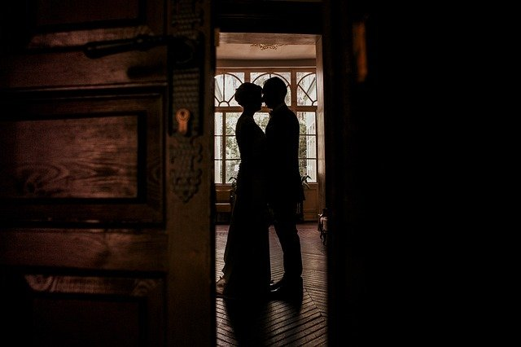

Gallery



Image
of
My name is Jo Smith and i am a graduate photographer from an art college in Dundee. I am born and raised in Dundee and have lived there my whole life. I am trained in nature photography but to make a living, i have used my skills in general photography. My prospective clients are engaged couples to be married. Below you can click to see my Twitter. I also have an Instagram.
Follow @josmithphotoThese include wedding events and engagements.
These include photographs of amazing scenery.
These include photographs of natural scenery like forests and lakes.
Private events usually goes for £40 per hour.
Short term contractual work goes for £25 per hour.
Long term contractual work is negotiable.
I also sell framed photographs to local companies and this is expanding.
My framed photos are sold to local bars, cafes, and restaurants to customers for 10% of the sale value.
My details are below: